我猛地坐起来，盯着手机确认——不是错觉。真的多了一分钟。
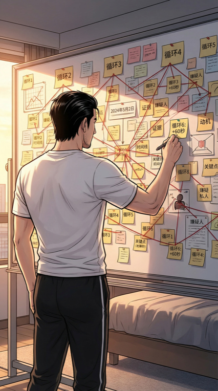
便签墙上已经贴满了前五次循环的笔记。我像个疯狂的侦探，在第六次循环的早晨添上新的数据点。
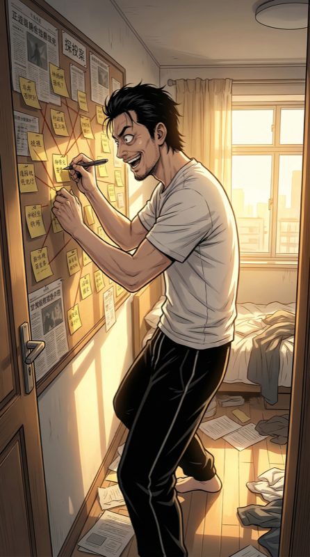
[LOG] Loop 6 init. Delta_time = +60s.
假设：真诚度与时间增量正相关。
我在便签上写下这行字，然后退后两步审视整面墙。说实话，如果现在有人推门进来，一定以为我精神出了问题。
出门。前台。我已经知道小王9:12会端咖啡从左侧过来。
这次我不躲，不接——我提前帮她把路上的拖把桶挪走。
五次循环了，我终于想明白：她每次洒咖啡的根因不是她手抖，是这个该死的桶。
小王安全通过。她惊讶地看我一眼：
"朱总？你怎么知道那里有桶？"
我笑了笑："直觉。"
——其实是经历了五次你洒我一身的惨痛教训。但这种话说出来像个变态。
"朱总今天气色不错啊。"
每次循环她都说这句，但这次语气微妙不同。带了一点……好奇？
[LOG] 咖啡危机：已消除根因。
9:47。我先接了电话：
"PPT第12页改了，还有什么？"
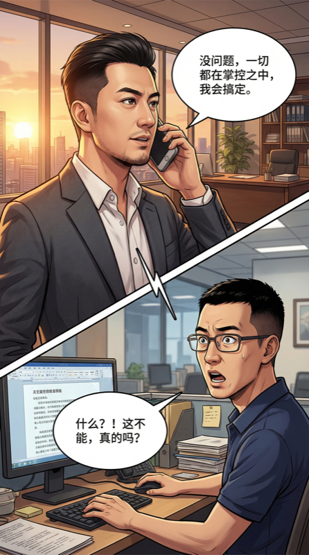
电话那头沉默了三秒。
"你怎么知道我要说什么……"
我："老陈，如果我告诉你今天会重复，你信吗？"
陈明沉默，然后："……你是不是又熬夜了？我给你带了咖啡，下来拿。"
陈明回复公式：「你是不是又__了？我给你__了」
置信度：99.7%
六个循环了，这个公式从未失败。老陈，你是我生命中最稳定的常量。
这次我决定不改PPT，不改话术——改态度。
前五次循环我都在优化"表演"，这次我要优化"状态"。
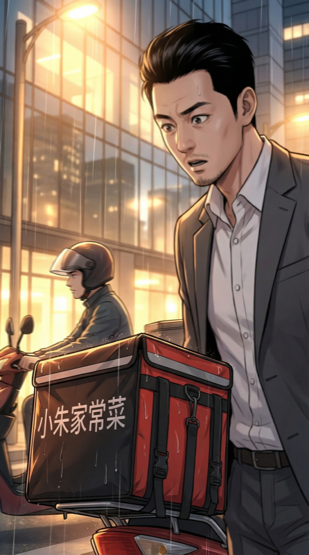
路上看到外卖小哥闯红灯，第一次注意到他送的是"小朱家常菜"的外卖。
我家附近那家店。
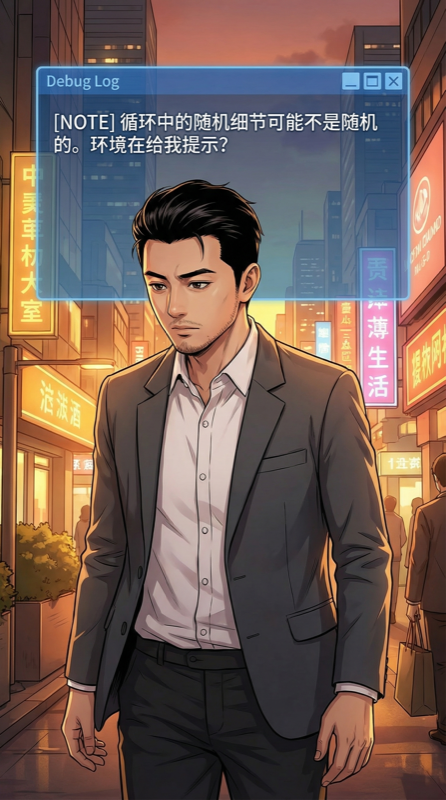
[NOTE] 循环中的随机细节可能不是随机的。环境在给我提示？
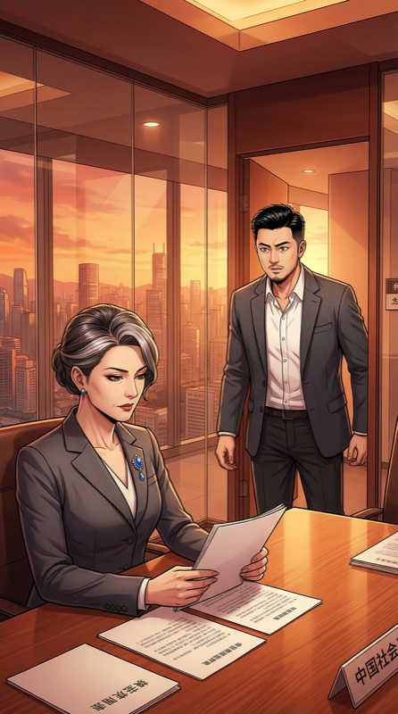
赵姐已在会议室等候。
今天的她胸针不一样——前五次都是银色几何形，今天是蓝色水滴形。
等等。今天的她……也和之前不同了？
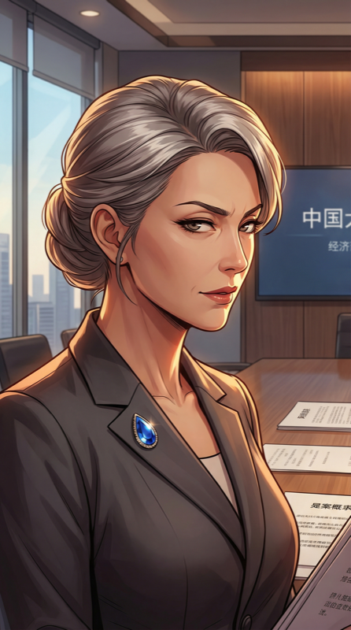
讲到第八页，赵姐照例打断。但这次问的不是老问题。
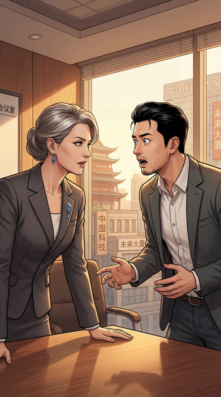
"上一次你说想让AI成为每个人的朋友。我回去想了一晚上。"
我整个人僵住了。她记得上次循环？
不……对她来说时间是线性的。"昨天"就是上一次循环。
但她感受到了——"那个朱江"和"这个朱江"之间的裂痕。
这意味着：真诚不是只说一次就够。每次循环的痕迹会以某种形式积累在别人身上。
"你PPT里的朱江和你昨天说话时的朱江，完全是两个人。"
赵姐的话像一记重拳。
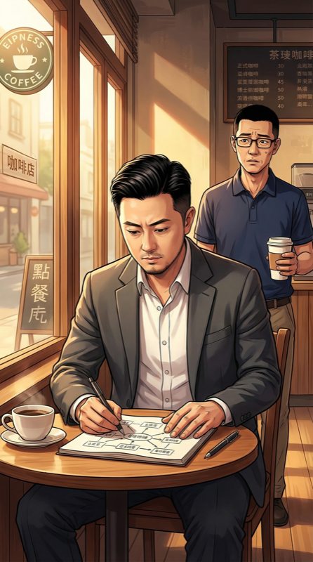
走出会议室，我在楼下咖啡馆坐下。陈明递了杯美式。
我打开笔记本——物理的，不是电脑——画出六次循环的关系图。
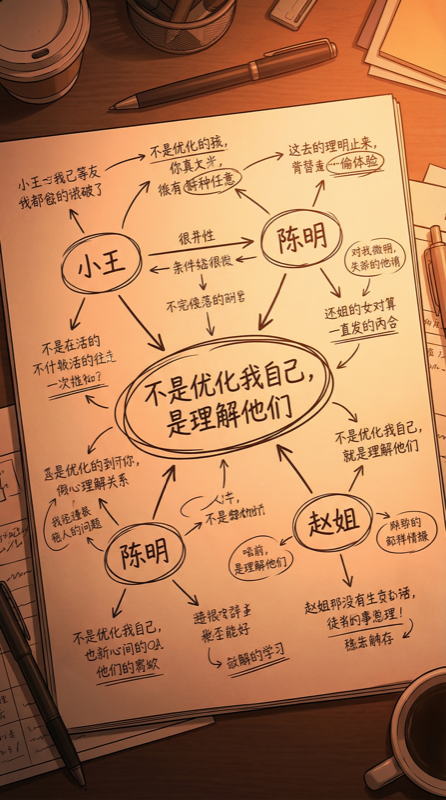
关键发现：
• 小王洒咖啡：前5次我只管自己（躲/接/帮），第6次我解决了根因 → 她的态度变了
• 陈明打电话：前5次我只接受信息，第6次我主动先说 → 他的反应变了
• 赵姐：真诚的回答让她的后续行为产生了变化
[INSIGHT] 循环不是让我优化自己。是让我理解别人。
每个"NPC"不是NPC——他们是有隐藏状态的完整程序。
我要debug的不是我的代码，是整个系统的代码。
好家伙，创业CEO花了六天才发现"用户才是核心"。
说出去丢人。
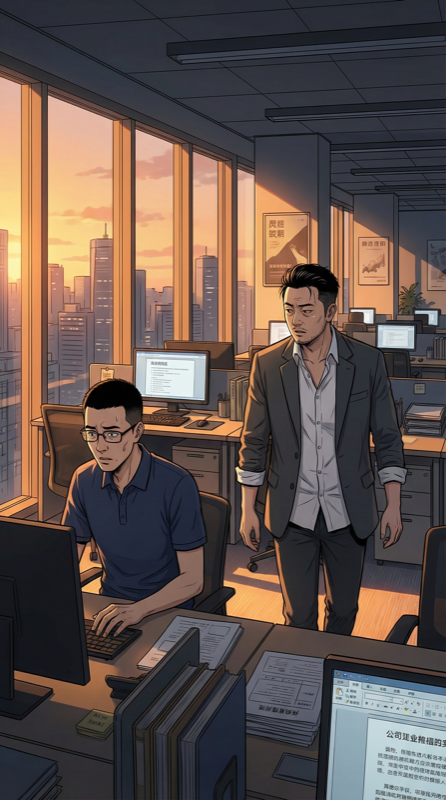
傍晚回公司，发现陈明还在加班。
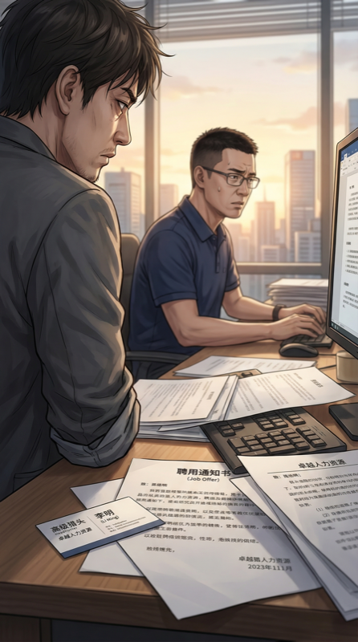
他桌上放着一份简历——猎头挖他的。
我以前从没注意过这件事。前五次循环这个时间点我都在改PPT。
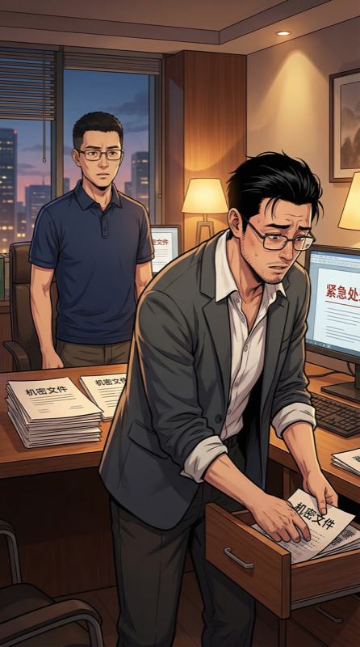
陈明看到我看到了。他慌忙把东西塞进抽屉，像个被抓到作弊的学生。
我拉了把椅子坐下："我如果是你，我也会看看别的机会。"
——先共情。给他台阶。
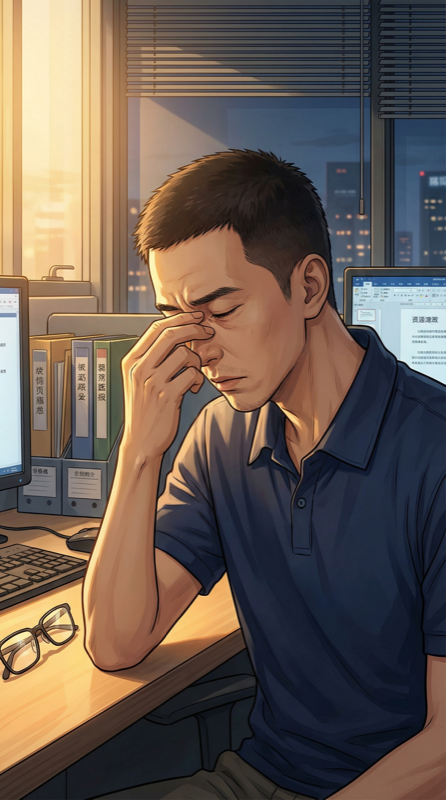
陈明沉默了很久，摘下眼镜揉了揉鼻梁。
"不是钱的问题。是我……看不懂公司方向了。"
原来真正的问题是——我从来没好好跟他沟通过愿景。
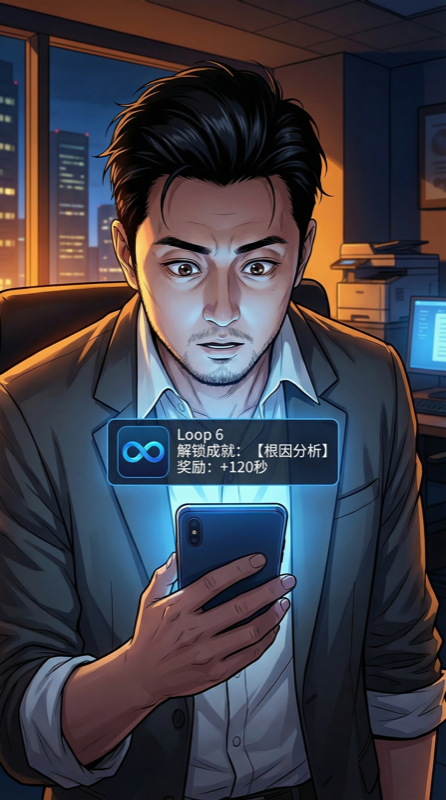
手机突然弹出通知——来自一个我从没装过的App，图标是∞。
「Loop 6 解锁成就：【根因分析】
奖励：+120秒
下一个断点：找到你最大的未处理exception」
我疯狂想截图——但来不及。通知消失了。App也消失了。
[BUG] 系统通知无法截图。这是feature还是bug？
倾向于feature——这个系统的开发者和我一样讨厌screenshot testing。
翻遍手机，什么痕迹都没有。
就像那条通知从未存在过。但+120秒是真的。
7:03——闹钟响了。第七天。又多了两分钟，和通知说的一致。
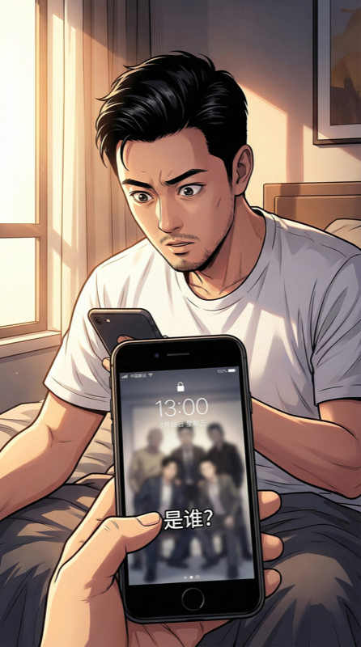
但今天醒来，有个关键不同：手机壁纸变了。
原来是默认壁纸，现在变成了一张合影——我和一群人。但这些人，我一个都不认识。
「Version 0.7 — 6/7 exceptions handled」
我还有一个"未处理的exception"。
—— 第二章 · 完 ——
第三章：例外处理